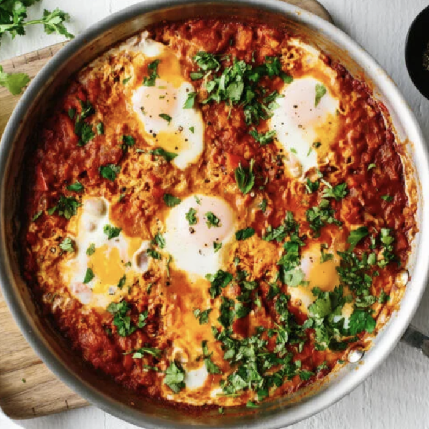

Shakshuka

Ingredients
- 3 tbsp olive oil
- 2 large onions, thinly sliced
- 4 peppers, preferably mixed colours, cut into long slices
- 4 garlic cloves, finely chopped
- ½ tsp cumin seeds
- ½ tsp caraway seeds
- 1 tbsp tomato or red pepper purée
- 2 x 400g tins tomatoes
- 1 small bunch fresh coriander, roughly chopped
- 1 small bunch fresh parsley, roughly chopped
- 8 free-range eggs
- 85g/3oz feta, crumbled
- 8 tbsp thick natural yoghurt
- salt and freshly ground black pepper
Instructions
- Heat the olive oil in a large, lidded frying pan. Add the onions and peppers and season with salt and pepper. Cook on a medium heat until just softened.
- Add the garlic and cook for a further 2 minutes. Sprinkle in the cumin and caraway seeds and the cayenne pepper.
- Stir in the tomato or red pepper purée and cook for a couple more minutes until the paste starts to separate. Add the tomatoes with a splash of water.
- Simmer for 10 minutes, uncovered, until reduced a little. Taste after 5 minutes and add a little sugar if you think the tomatoes need it. Keep an eye on the texture – you do not want it runny, but it must not get too dry, either. Add another splash of water if necessary. When the sauce is reduced, stir in the herbs.
- Make 8 small wells in the sauce. Break an egg into a cup and drop carefully into a well, repeat with the remaining eggs. Cover and cook for a 5–8 more minutes until the whites are just set and the yolks are still runny.
- Sprinkle over the crumbled feta.
- Enjoy!